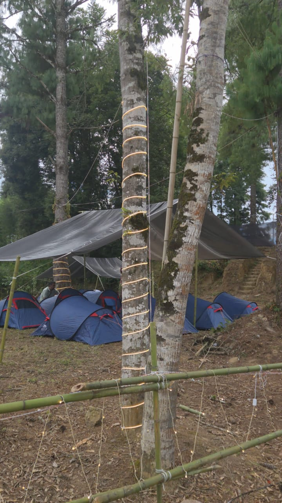
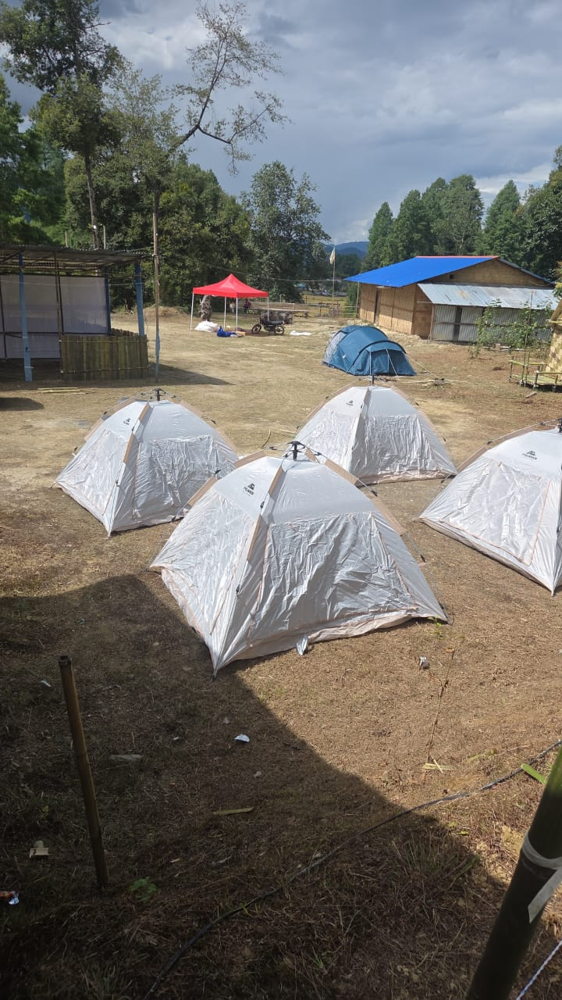
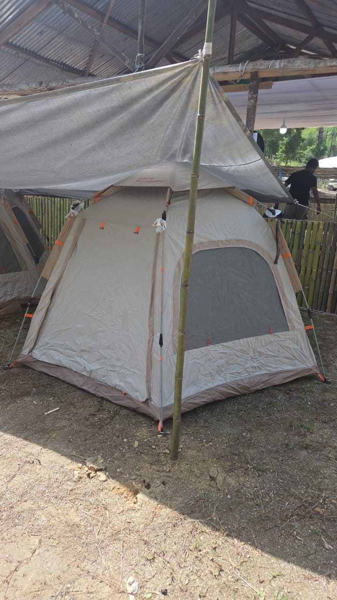
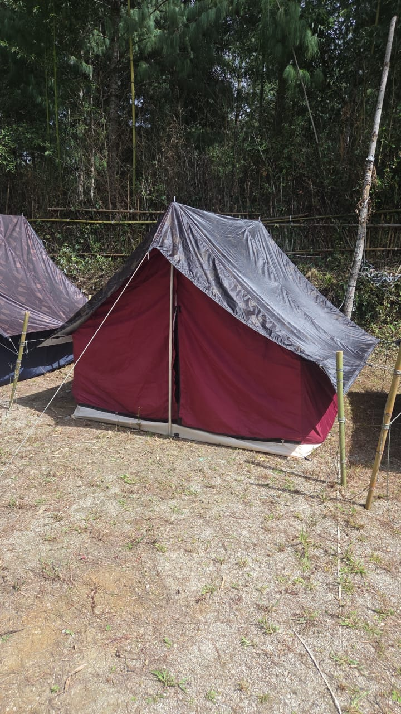

Cherry Blossom Festival 2026 is scheduled for 20–21 November at Highland Ground, Mawkhanu, New Shillong. Confirm event access and tickets with official channels.
Shillong · 20–21 November 2026
Cherry Blossom
Basecamp.
Festival camping shaped around music, mountain air and Shillong’s autumn bloom. Pick a tent category, add your journey from Guwahati and leave the logistics to the Basecamp team.
Shillong, closer
Festival energy with a proper place to reset.
Our Cherry Blossom Basecamp brings the practical comforts together: category-led stays, clean shared facilities, daily breakfast, a social camp zone and optional Guwahati pickup and drop support.
From a solo dome to premium safari tents, every choice clearly shows its sharing plan and per-guest price.
Guwahati pickup/drop and campsite travel can be added to a stay enquiry, with final timings confirmed before travel.
Stays
Every Cherry Blossom stay category.
All listed camps include a comfortable mattress and bedsheet, soft pillows and warm blankets, a separate camp zone, daily breakfast, bonfire/music zone and clean toilets with three daily cleanings.

Solo Dome Tent
₹2,799
- 1 guest
- Your own tent and personal reset space

Premium Dome
From ₹2,200
- 3 sharing: ₹2,200 per guest
- 2 sharing: ₹2,999 per guest
- More headroom and space

Premium Couple Dome
₹3,999
- 2-person sharing
- Designed for a more private festival stay

Alpine Tent
From ₹2,499
- 4 sharing: ₹2,499 per guest
- 3 sharing: ₹3,199 per guest
- 2 sharing: ₹4,999 per guest
Premium Safari Tent
From ₹4,999
- 4 sharing: ₹4,999 per guest
- 3 sharing: ₹6,999 per guest
- 2 sharing: ₹9,999 per guest
Guwahati pickup and drop
Start from the airport city. Arrive ready for the festival.
Guwahati is the preferred long-distance arrival point for many guests. The road journey to Shillong is planned around your flight or rail arrival, guest count and the festival operating schedule.
Share your flight or train details after booking. We confirm the collection point and timing in writing.
Vehicle type is selected around your group size and luggage. Exact route and rest stops are confirmed before departure.
Departure transfers are coordinated around your return flight or rail connection, with a sensible mountain-road buffer.
Transfer fares are request-based and not included in festival entry tickets or the tent price unless confirmed in your package.
Travel packages
Four or six nights around the festival.
These are curated campsite itineraries, not an official festival schedule. They are shaped around the announced 20–21 November festival dates, with final activity timing, routes and pricing confirmed before payment.
Festival essentials
- Guwahati pickup and road transfer to Shillong; Basecamp check-in.
- Shillong settling-in day with optional local orientation and campsite community time.
- Cherry Blossom Festival day one; planned campsite pickup/drop.
- Cherry Blossom Festival day two; return to Basecamp after the programme.
- Breakfast, checkout and return transfer to Guwahati.
Best for guests who want the festival, a managed transfer and a simple stay plan.
Festival + Meghalaya pace
- Guwahati pickup, Shillong transfer and Basecamp check-in.
- Easy Shillong orientation, local food and rest before festival days.
- Flexible Meghalaya experience day, selected with the group and conditions in mind.
- Cherry Blossom Festival day one.
- Cherry Blossom Festival day two.
- Unhurried post-festival day for Shillong time and packing.
- Breakfast, checkout and Guwahati drop.
Best for guests who want breathing room before and after the festival.
Campsite experiences
Wake up close to the music.
Start slow with daily breakfast, a prepared bed and the comfort needed for full festival days.
Share the after-hours energy in a managed, social campsite zone.
Concrete shared toilets are cleaned three times each day, with a team on hand for campsite support.
FAQ
Cherry Blossom stay questions.
Are festival tickets included?
No. Festival entry tickets are separate unless a written confirmation specifically includes them.
What does the tent rate include?
Each listed category includes bedding, daily breakfast, the campsite zone, bonfire/music zone and shared toilets on a three-times-daily cleaning schedule.
Can I add Guwahati pickup and drop?
Yes. Add it to your enquiry; the Basecamp team confirms the vehicle, timings and charge based on your travel details and group size.
When should I arrive?
The 4N/5D and 6N/7D plans are designed around the 20–21 November festival window. The confirmed schedule includes road-time buffers and your selected transfer plan.
Secure booking request
Choose your Cherry Blossom stay.
Select the tent category, enter your details and continue through secure PayU checkout. The Basecamp team follows up with your stay and transfer confirmation.
Book Cherry Blossom stay